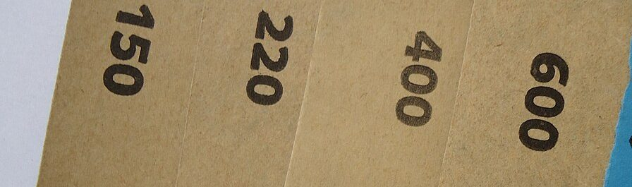

イメージ例
サンドイッチのお店と聞いて、いつか行ってみたいなと思っています。まずはInstagramをのぞいてみたいです。
#240 / 口コミ
こんな声が届いたら、というイメージ例を三枚並べました。
以下は制作側の創作で、実在のお客様の投稿ではありません。いずれも「いつか行ってみたい」という想像のイメージ例です。
サンドイッチのお店と聞いて、いつか行ってみたいなと思っています。まずはInstagramをのぞいてみたいです。
どんなお店なのか気になるので、Instagramをのぞいてみようと思います。いつか行ってみたいお店のひとつです。
営業時間などが分かったら、行ってみたいです。それまでは、Instagramの更新を楽しみにしています。
投稿者に関する情報は掲載していません。実際のお声は、ご提供いただき次第、差し替えます。


砂の波模様と、紙やすりの裏の番手印。どちらもフリー素材のイメージです。